底下是我使用線上翻譯軟體的說明，大家可以先從文字與圖片了解到這次AutoCAD 2012的相關新功能，有需要測試使用可以前往下載，目前只有提供英文版~
Model Documentation Tools-模型文件
節省時間自動生成智能文件為 AutoCAD，歐特克 ® Inventor ®軟件，以及其他車型。 進口各種各樣的其他格式包括SolidWorks ®，Pro / ENGINEER的®，CATIA的®，犀牛，和NX ®。 圖視圖，邊緣顯示，即時更新和位置時，一個工程更改。
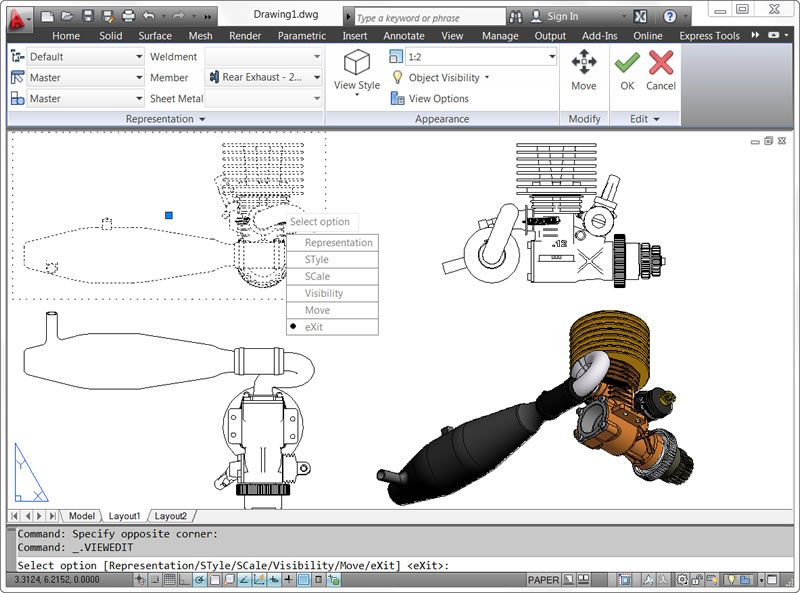
Associative Array Functionality-關聯式陣列功能
關聯性能讓您藉由維持項目之間的關係，而快速將變更套用至整個陣列。陣列可以是關聯式或非關聯式。

AutoCAD WS
使用 AutoCAD® WS 可在網路上共用、編輯和管理 AutoCAD 圖面。
AutoCAD WS 是一個介面直接與 AutoCAD 整合的應用程式。您對本端 AutoCAD 圖面進行變更時，您儲存在 AutoCAD WS 伺服器上的線上複本將會與之同步。
AutoCAD WS 編輯器可讓您透過有網頁瀏覽器的電腦，存取和編輯線上複本。多位使用者可在線上即時處理同一圖檔。
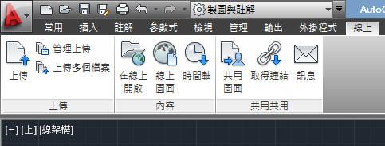
Multi-function Grips-多功能掣點
如果有許多物件，您也可以將游標懸停在掣點上以存取具有特定物件的功能表，有時候可能是特定掣點的編輯選項。按 Ctrl 以循環檢視掣點功能表選項。

Command Line Enhancements-•自動完成指令行
AutoCAD 2012現在提供自動完成選項可以幫助您更有效地訪問命令。 當您鍵入在命令提示符下，AutoCAD的自動完成輸入與 AutoCAD命令或命令別名。
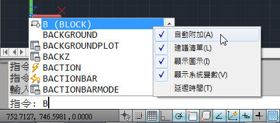
Autodesk Inventor Fusion-Inventor融合
增加了三維概念設計能力AutoCAD和樹立了新標準的專業 3D建模易用性。 它使您能夠靈活地編輯和驗證模式從幾乎任何來源，幫助您進一步體驗到好處的，易於使用的三維本地DWG格式。
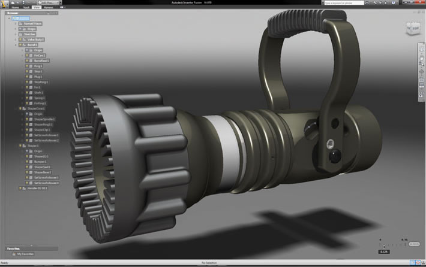
Simplified Migration to AutoCAD 2012-簡化移轉到AutoCAD 2012
新的和增強的工具更容易地遷移或重置自定義設置 AutoCAD到默認的安裝設置。 改進處理和新的工具調色板遷移自定義材料幫助緩解過渡到AutoCAD 2012，一個新的重置工具可以幫助輕鬆地返回到默認設置。
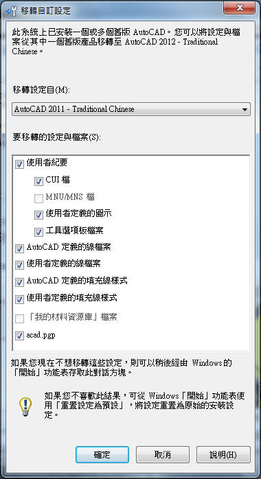
In-Canvas Viewport Controls-視埠控制
視埠控制會顯示在每個視埠左上角，提供便利的方式來變更視圖、視覺型式和其他設定。
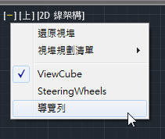
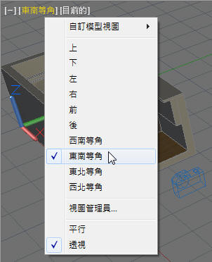
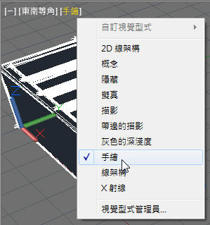
Editable UCS Icon-編輯 UCS圖示
UCS的已更新，允許直接操縱。 選擇的UCS圖標，並使用多功能夾具改變的UCS。 輕鬆移動的起源，與對齊 UCS的對象，圍繞其旋轉的X，Y或Z軸無需訪問的UCS命令。
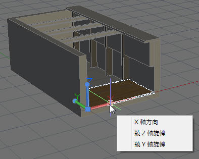
Delete Duplicate Objects-刪除重複的對象
清理您的圖紙通過消除重複或不必要的幾何形狀。 刪除重複工具提供更高的性能，尤其是在運行圖上的許多對象。
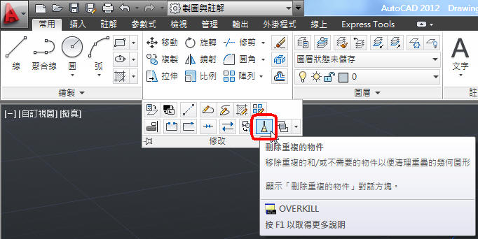
Blend Tool-混成曲線
創建對象的選項為樣條切線或順利兩條曲線之間的連續性與新的混合工具，加快文件的時間。
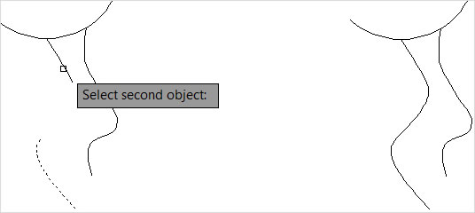
Autodesk Exchange for AutoCAD-歐特克 AutoCAD的交易所
與連接訪問的提示和教程，入門視頻，可下載的插件，並幫助內容，歐特克交易所帶來的內容，您需要直接向您的AutoCAD的工作區。
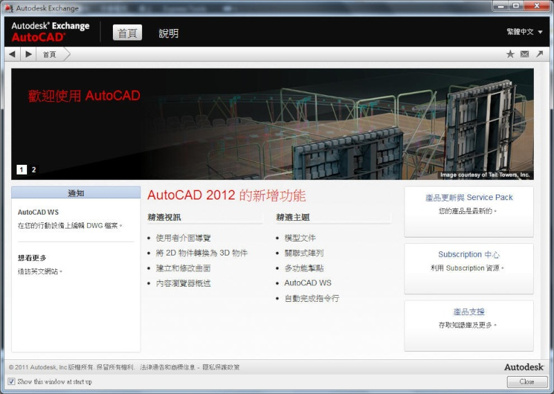
Autodesk Content Explorer-歐特克內容總管
立即找到您的設計內容的基礎上的文件對象或文本屬性。 歐特克 Explorer創建內容索引數據的基礎上，你看它指示，幫助您快速訪問文件。
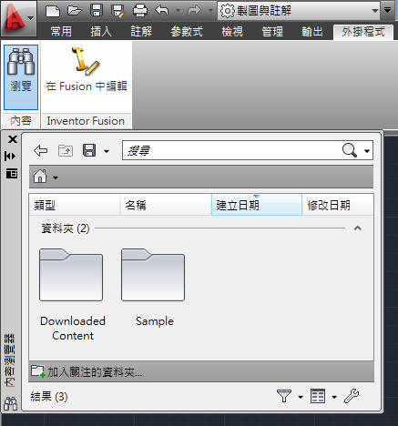
3D Associative Array-三維關聯數組
使用關聯陣列功能更容易地定義對象時排列在三維設計。 每個三種類型的關聯數組（矩形，極性和路徑）包括能夠選擇的對象數組在三維空間。
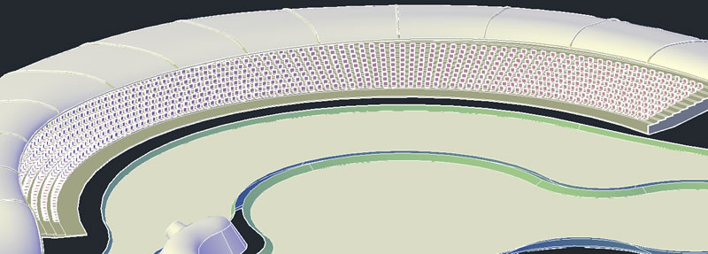
延伸主題閱讀：
[專案報告]AutoCAD 2012 Content Explorer 內容瀏覽器
http://autocad.bestoforum.net/t9349-topic
[最新資訊]AutoCAD 2012 基礎介面使用-影片操作(英文說明、中文字幕)
http://autocad.bestoforum.net/t9350-topic
[最新資訊]AutoCAD 2012 線上說明及facebook
http://autocad.bestoforum.net/t9351-topic
[最新資訊]AutoCAD 2012 30天試用安裝步驟(英文版)